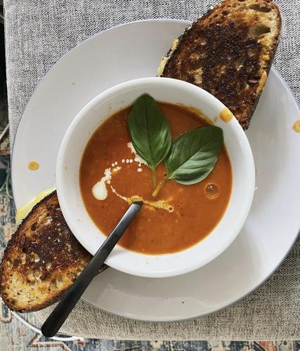

Toasty Tomato Soup
The perfect meal for a cold rainy day <3

Ingredients
Makes 16 servings
- 3 TBSP -Olive Oil
- 32 Ounces - Chicken Stock
- 3 TBSP - Butter
- 1/2 TBSP - Crushed Red Pepper
- 1 - Large White Onion
- 3 - Garlic Cloves
- 2 TSP - Dried Basil
- 3 (28 Ounce) Cans - Undrained Whole Peeled Tomatoes
- 2 TBSP - Tomato Paste
- 3 TSP - Sugar
- 1 TSP - Salt
- 1/2 TSP - Pepper
- Heavy Whipping Cream and shredded parmesan cheese to taste
- Garnish with Fresh Basil Leaves
Method
- In a 6-quart stockpot or Dutch oven, heat oil, butter and pepper flakes over medium heat
until butter is melted. Add carrots and onion; cook, uncovered, over medium heat, stirring
frequently, until vegetables are softened, 8-10 minutes. Add garlic and dried basil; cook
and stir 1 minute longer. Stir in tomatoes, chicken stock, tomato paste, sugar, salt and
pepper; mix well. Bring to a boil. Reduce heat; simmer, uncovered, to let flavors blend,
20-25 minutes.
- Remove pan from heat. Using a blender, puree soup in batches until smooth. If desired,
slowly stir in heavy cream, stirring continuously to incorporate; return to stove to
heat through. Top servings with fresh basil and Parmesan cheese if desired.
- Enjoy!